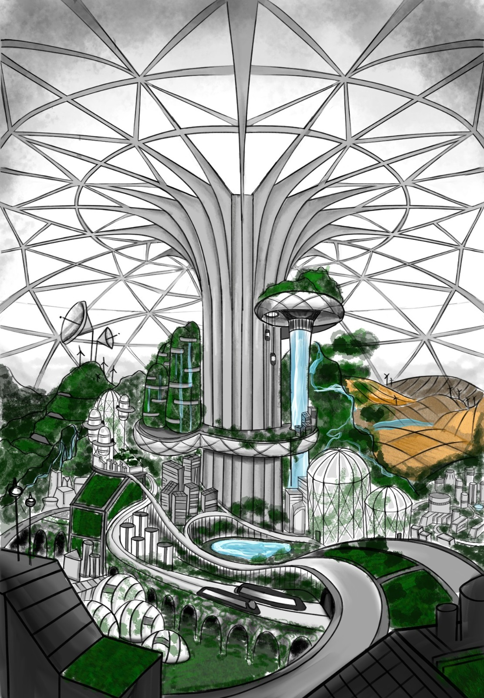
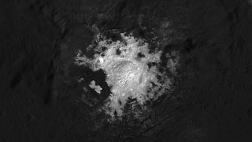
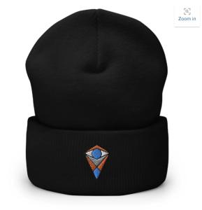
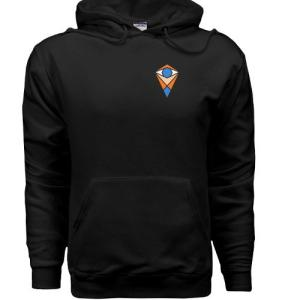
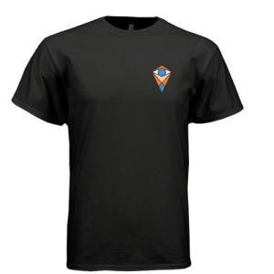

About Us

Horus University aims to graduate well-rounded students who will be beneficial to society at first. But the
main motto in Horus is self-sufficiency,
it may fit into both our students and school. It goes in the same direction with education policy and students,
graduate students and gain teachers, that is the policy.
In space, conditions are extreme and self sufficiency starts psychologically. Then, if we look at the bigger
picture, Horus University is also a self-sufficient institution.
Goal is to maintain the research and this is provided with Horus-1's own energy, money, and knowledge. The loop
continues inside, the key point is to manage it, we believe our
students in that point. They will be having normal lessons and courses based on the fundamental science branches
in an optional way as the other universities; however, there is
a reason that Horus University is the most functionable university instead of the most demanded university. Of
course, Horus’s possibilities are high standards but every student
should sacrifice something to be a part of it and the mentality makes us stand out. Every student had exams to
be accepted to Horus and their aim is passing through this school,
this is why they are the students of Horus university. In brief, advanced research requires advanced students,
our mission is to educate advanced students who already have the
perseverance to achieve it.
Just like our name, Horus, that comes from the god of vision, our vision and our future is the most important thing
here in Horus University. By carrying the expectations from a regular university to the next level, Horus achieves to
take the concept of learning a step further. Here, students can continue their studies by using the resources from space
while professors can improve their research by using the resources in space to help humanity. By caring about the future
of humanity as a whole, Horus University aims to fulfill what Horus, the god of vision suggests, creating a brighter future.
Our Vision
Just like our name, Horus, that comes from the god of vision, our vision and our future is the most important thing
here in Horus University. By carrying the expectations from a regular university to the next level, Horus achieves to
take the concept of learning a step further. Here, students can continue their studies by using the resources from space
while professors can improve their research by using the resources in space to help humanity. By caring about the future
of humanity as a whole, Horus University aims to fulfill what Horus, the god of vision suggests, creating a brighter future.
Experiment of the Week
DISCLAIMER: PLEASE CONDUCT THIS EXPERIMENT WITH ADULT SUPERVISION
AND ACCORDING TO SAFETY PROTOCOLS
Did you know that fire behaves completely different in space? There are many unique
properties of fire which are in
space and this weeks experiment will help you document all of these.
Materials
- A small lighter
- A copy of the table which will be provided
- A stopwatch
- Fire suppressant
- A 100 ml cylinder
- 10x10cm paper pieces
- Oxygen gas hire monitor
- Duct tape
Procedure
Ask a friend or a teacher to help you for the best results
- Use the duct tape to combine the cylinder with the oxygen monitor
- Put the paper on a flat surface and ask the person who is helping you to reset the setopwatch
- Light the paper on fire and swiftly close the cylinder on top of it and signal the person who is helping you
to start the stopwatch timer
- Time how long it takes for the fire to burn out
- Considering that the cylinder has approximately 21 percent oxygen, after the fire has burnt out, find out
the oxygen percentage with the oxygen gas
hire monitor taped to the cylinder
- Record the results
Compare the results with the constant from Earth which that fire
needs 16% oxygen. Find out if the fire requires more or less oxygen to burn in space.
Research
Undergraduates solve the mystery of the bright areas on Ceres

Our astrophysics and geology majors collaborated in order to prepare an extended research paper concerning the
bright spots we see on the surface of Ceres.
With the help of their professors, our crew went on an expedition to the Occator crater. Hawking-1 probe, named
after the honorable theoretical physicist Stephen Hawking,
was used to transport the crew to the surface of Ceres. Students brought their special testing equipment to
collect specimen dust that was later thoroughly analyzed in our
chemistry labs. The composition of the dust indicates that bright locations were deposits mostly made of sodium
carbonate. They are likely the leftovers of a liquid that
made its way to the surface and immediately evaporated, leaving behind a shiny salt crust. By analyzing the data
collected, students hypothesized that the liquid probably
came from a deep reservoir of salt-enriched water. Using specialized radars, we were able to locate a water mass
that is about 40 kilometers deep and hundreds of kilometers
wide. The students that took part in the project received a certificate of achievement and a money prize of 500
dollars. If you want to do a similar project, you can ask
your related professor or apply to the department of researches.
Psychology students won a competition!
Today, a team conducted by three psychology students, Melisa Topaloğlu, Judith Mellum, and Nuru Igwe, won a
research competition at Earth. Their research was
about the effects of a change in the environment that is space for mentally ill people as we had a lot of
neurodivergent people on campus. They first did interviews
with them and got through the results. They found out that despite the common misconception that neurodivergent
people don’t want to get out of their comfort zone,
space actually helps them get away from the problems they face on earth. They additionally looked at the
neurological effects of this thesis and found the same result.
They worked so hard and this research took four months but it was worth it. They claimed their prize digitally
this morning.
Opening Ceremony for Class of 2042
In Horus-1
Whispers echoed in the hall. Curious eyes were looking around. The head principle in a white suit took the
stand.
-The fate of humanity has changed with just a single step. It was a moist day in 1969, a light beam disappeared
in the clouds between the gaze of 600 million. That beam was indeed three little musketeers, unaware of what
they would face. After they passed the atmosphere, they left all the knowledge of mankind with it. That
cheese-like dot was getting bigger and bigger then they took action for landing. Before they reached the ground,
the debate was still ongoing, who will first step on the Moon? Finally, they gave this honour to the commander.
He stood behind the door, with a feeling he has never seen before. Thrill and excitement were going all over his
body, of course in zero-G, trying to escape from dismay. Doors were unlocked. Armstrong threw a glance at
immense solitude, collapsed in silence, and said his iconic words “that’s one small step for man, one giant leap
for mankind.” And he was right. It is fascinating to see how far humanity has come in not more than a century.
That small dot guided us to beyond, to where we are right now. I can see many bright faces, ready to shine. I
can see a bright future in them. Promising. You are the ones who will carry us further. We all have hopes and
dreams. That’s why we’re all here. And today, we’re here to prove that we can do it. Together, we can do the
imaginable. Everybody, welcome to Horus-1.
Sky is Not (Poem)
I have a toast to humanity!
Listen to, thy young colony!
We, the children of the earth,
The makers of the wonders,
Thinkers of the ideas and
The lovers of the beautiful,
We are here as one!
From you to me,
And to him and her and they and us,
We are one in the same in cosmos,
And yes, we lived in a pale blue dot,
But now, there a smaller grey one
Right beside it that we adore,
And learn and teach,
And innovate and learn and fight and debate,
There is a second home we live in.
Tis not a victory of no mere man,
Not one genius or one team,
But we did it, We
The humanity.
These hands we have
That once carried the stones and
Shaped metal,
These feet we traveled and these eyes
we wandered with,
And this mind we dreamed with,
This made it possible,
To carry one terrestrial species
To a celestial, infinite
Stupendum!
And now,
If a young kid from
some place down there once
Is here on the surface
Of Lady Artemis,
Looking at Mars.
And we are telling each other
Every time we fail,
And flail and cry,
That we can do it,
We can do it.
We once put a man on the moon,
And now there is whole school,
And a culture, waiting to grow.
Sky is not the limit.
No more.
what we can dream,
Is the only limit there is.
Incase you missed it at the navigation bar, don't forget to check out our resource calculator!
Calculator
Merch
Our Beanie

Our Hoodie

Our Shirt
